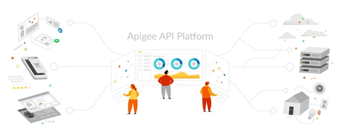
Last Updated: 2024-03-15
Overview
In this lab we are going to use the Apigee API Platform to first design and publish an API to an example backend service (in this case the Google Maps Solar API), and then use the new Tools feature in Vertex Conversations to let users utilize this API in their LLM conversations. And finally we're going to publish a custom LLM model through our API, bringing security and ecosystem access to our Gen AI models and features.
Why APIs with Gen AI?
Why do Gen AI models need APIs? It's quite simple: once you publish or want to utilize a Gen AI model, you will need to manage its visibility to users, secure access to it using identity access controls such as OAuth 2.0, enforce traffic management on who and how much it can be accessed, and generally have monitoring and analytics in place to make sure that the model is being used as intended by its target users. Cloud AI platforms such as Vertex AI offer built-in identity access with their native systems such as Google Cloud IAM, but do not offer support secure ecosystem publishing or the monetizing of model access. That's where Apigee comes in!
Additionally, Apigee can make your existing APIs consumable by Gen AI LLM conversation agents, meaning there is a whole new category of API clients that can offer growth and expansion for existing APIs.

In the diagram above you can see how APIs & Integration can help connect, secure & orchestrate the agents & app experiences on the left side with our Gen AI models & services on the right side. This makes it possible to offer the scaling & management capabilities needed for developer & partnership management, monetization of models & services, with unified access, monitoring & security.
What you'll build
In this codelab you're going to deploy a sample API that offer solar panel calculation and estimation services for property owners, as well as a custom LLM model that can answer any questions that property owners might have about installing solar panels on their property.
- The APIs will be published on Apigee X in a Qwiklabs Google Cloud environment.
- The backend services to offer solar panel energy prediction and calculation logic is offered by the Google Maps Solar API, as an example of a powerful backend service can be leveraged for our new apps. Additionally the Google Maps Geocoding API is used for address resolution.
- You can test the service in the Solar API demo test client.
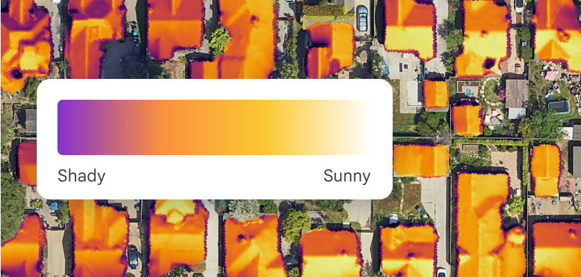
- A Gemini pro model to answer all solar power questions is also published behind the API.
- You will configure a Vertex AI Conversation Agent that connects to the API and offers users the ability to to use the service in their chat to estimate the solar potential of the roof on their property, as well as to offer the solar LLM model detailed questions about solar energy for providers.
- You could also connect ChatGPT to your API as well using the same mechanism (not covered in this lab). It's a multi-model world, so let's be prepared for it!
Here's an overview of the architecture that we will build in this lab:
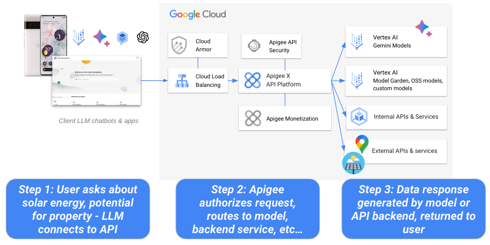
The boxes in gray above are not covered in this lab, but can be easily explored as add-ons using the Apigee & Cloud Armor documentation.
What you'll learn
- How Apigee is used to integrate existing services into LLM ecosystems such as Vertex AI Conversations using Gemini Pro.
- How to configure Apigee to secure and make both existing and new Gen AI models & services available to clients.
- How Google Cloud services such as Apigee & Vertex AI make the process of publishing Gen AI models secure, scalable and endlessly extensible.
This codelab is on the Apigee and Vertex AI aspects of publishing and integrating Gen AI models with APIs, but of course there are many adjacent services and features, such as the Application Integration workflows or advanced Dialog Flow features that can also be explored.
What you'll need
- A recent version of Chrome (112 or later)
- Some familiarity with running Linux shell commands (beginner level)
Log in to the Apigee console
To start, log in to your instance of Apigee using your Google Cloud credentials.
Verify that you can access the console
You should see the Apigee overview page, with instructions for getting started. If you see the Apigee welcome message and no option to deploy your first proxy, then you first need to provision an Eval (60 day test) or Pay-as-you-go Apigee organization (org), see instructions for doing both options below. If you are using Qwiklabs, then you should have a pre-provisioned org already available.

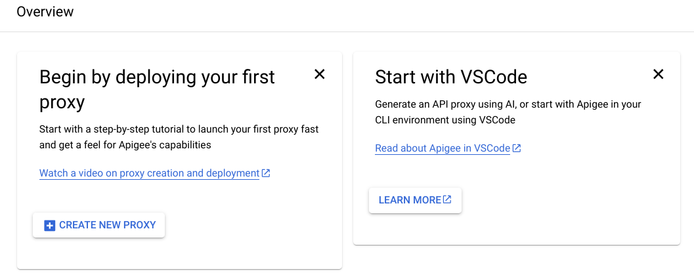
Or
Open Google Cloud Shell or a local terminal
You can work either in Google Cloud Shell, where you can run commands directly from your browser in a shell with Apigee and your Google Cloud resources (recommended). Alternatively, you can work locally in a terminal shell with gcloud installed and signed-in to your Google Cloud project.
Install the apigeecli command line tool for Apigee
We will be using the command-line tool apigeecli, to install just run this command in your shell.
curl -L https://raw.githubusercontent.com/apigee/apigeecli/main/downloadLatest.sh | sh -
export PATH=$PATH:$HOME/.apigeecli/binGet the assets
We've put everything you need to use this lab in a Github repository.
Clone the repository at https://github.com/tyayers/apigee-genai-solar-demo in your shell with the following command:
git clone https://github.com/tyayers/apigee-genai-solar-demo.git
cd apigee-genai-solar-demoYou should now have your Apigee org set up, and the code assets cloned in your own shell environment.
Get a Google Maps API key
We will be using the Google Maps Geolocation and Solar APIs in this lab, so we will need to get an API key to use in our app.
To get the key, open the Google Maps Credentials page, and either use an existing or create a new API key to use in this lab.
To create a new key, press the + CREATE CREDENTIALS link in the page overview.
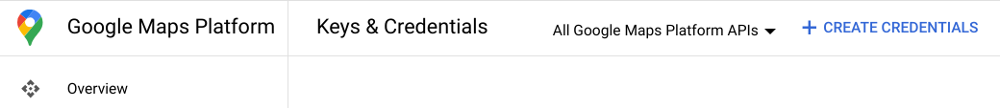
Keep the key handy for the next steps in the lab.
Set up your environment
We need to automate the deployment of our demo assets, and so will be using the gcloud CLI to deploy a lot of our assets. Make sure gcloud is installed (installed by default in Cloud Shell).
Now we need to set our environment information for further automation commands. Let's make a copy of the environment file 1_env.sh, edit with our own environment information, and then source it in our shell.
cp 1_env.sh 1_env.dev.shEdit the file 1_env.dev.sh and set your GCP project and region information (your GCP Project Id and chosen region such as europe-west1). Also set your Apigee environment (if you are using an Apigee evaluation instance then it is eval).
export PROJECT=YOUR GCP PROJECT ID
export REGION=YOUR GCP REGION
export APIGEE_ENVIRONMENT=YOUR ENVIRONMENTSave the file and run the following command to source the variables.
source 1_env.dev.shNow also set the project in gcloud.
gcloud config set project $PROJECTAlso enable Vertex AI and the Google Maps Geocoding API in our project using gcloud.
gcloud services enable aiplatform.googleapis.com
gcloud services enable solar.googleapis.com
gcloud services enable geocoding-backend.googleapis.comCreate a service account
A service account in Google Cloud is used to authorize service-to-service communication, and is a great way to enforce authorization without storing keys anywhere (using default application credentials).
Let's create a service account for any service-to-service communication in this demo.
gcloud iam service-accounts create solarservice \
--description="Solar service account" \
--display-name="Solar service"Now give the account the role access to use the Gemini Pro model. This will allow our API (which will use this service account) to access Vertex AI models such as Gemini Pro.
gcloud projects add-iam-policy-binding $PROJECT \
--member="serviceAccount:solarservice@$PROJECT.iam.gserviceaccount.com" \
--role="roles/aiplatform.user"
Storing keys
In order to deploy an Apigee proxy that can use the Google Maps Solar API, we need a secure place to store our Google Maps API key. For that we are going to create an Apigee KeyValueMap (KVM), where we can encrypt and store any data needed at runtime, such as API keys.
First we will create a KVM object in Apigee where we can store and access our keys. We will use apigeecli to create it by running this command.
apigeecli kvms create -e $APIGEE_ENVIRONMENT -n solar-keys -o $PROJECT -t $(gcloud auth print-access-token)You should see the following output confirming that our KVM was created.
{
"name": "solar-keys",
"encrypted": true
}You can validate that the KVM was created in the Apigee console where you should see the solar-keys now displayed.
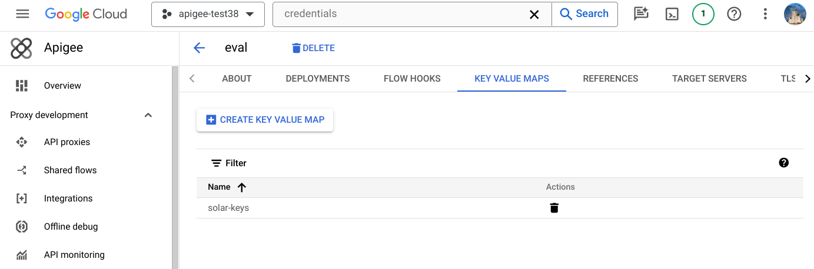
Now let's store our Google Maps API key in the KVM. We can do this with another apigeecli command.
GMAPS_KEY=YOUR_GMAPS_KEY
apigeecli kvms entries create -m solar-keys -k gmaps_key -l $GMAPS_KEY -e $APIGEE_ENVIRONMENT -o $PROJECT -t $(gcloud auth print-access-token)You should get a response like below confirming that the KVM entry has been stored.
{
"name": "gmaps_key",
"value": "XXXXXXXXXXXXXXXXXXXXXXXXXXXXXX"
}Deploy Apigee proxy
Now we will deploy a first version of our proxy to connect the Solar API to apps like LLM chatbots. In your terminal, go to the api-proxies/Solar-Service-v1 directory and deploy the proxy using the apigeecli command.
Change directories into the api-proxies/Solar-Service-v1 directory.
cd api-proxies/Solar-Service-v1
Zip the proxy bundle.
zip Solar-Service-v1.zip -r .
Upload the proxy bundle to our Apigee X org.
apigeecli apis import -o $PROJECT -f . -t $(gcloud auth print-access-token)
Deploy the proxy to the eval environment (or change for your environment of choice).
apigeecli apis deploy -n Solar-Service-v1 -o $PROJECT -e $APIGEE_ENVIRONMENT -t $(gcloud auth print-access-token) -s solarservice@$PROJECT.iam.gserviceaccount.com --ovr
Now you can go to the Apigee console and see the newly deployed proxy and its status.

Explore Apigee proxy configuration
Now let's take a look at the deployed proxy. Click on the link Solar-Service-v1 to open its detailed configuration.
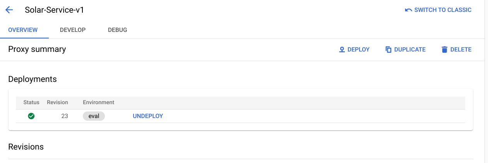
The OVERVIEW page contains information about the current version and in which environments it's deployed (we just deployed a version to the eval environment).
Click on the DEVELOP tab to open up the detailed proxy flow configuration.

Here you can see all of the policies used to secure and mediate the logic behind this API proxy.
Click on the Proxy endpoints > default in the left menu about half-way down.
This shows the flow that is executed when a user calls the default endpoint (/v1/solar-service).
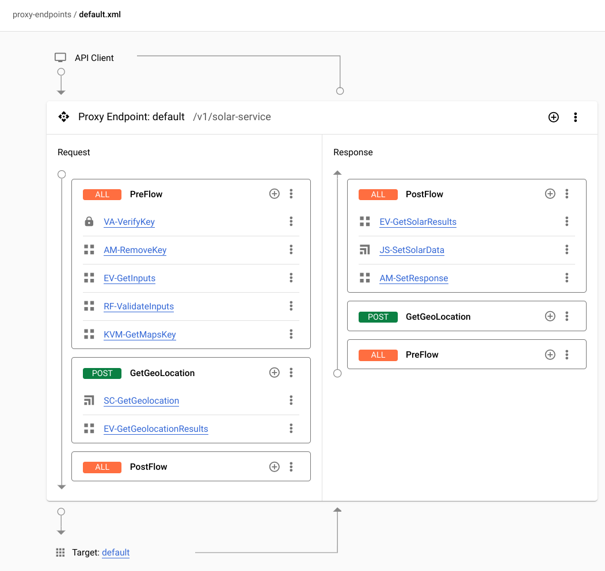
First, we are verifying the user's API key, then removing that key from the further traffic, getting and validating the inputs, and retrieving our Google Maps API key from the KVM that we set earlier.
Then there is an optional GetGeoLocation flow that is run if the user sent a text address, and which converts it into latitude and longitude coordinates using the maps geolocation API.
After that the request goes to the Target (which is the Google Maps Solar API) and then on the Response side we have some steps to convert and format the data. There is even a small Javascript script to do some solar financial calculations that normally a domain service would do, but which we are simulating in our API proxy for the purpose of this lab.
Test the API proxy
Let's now test out our API. Click on the DEBUG tab at the top of the screen to start an Apigee debug session. A debug session will trace live traffic from our API, and let us step through the processing steps in real-time.
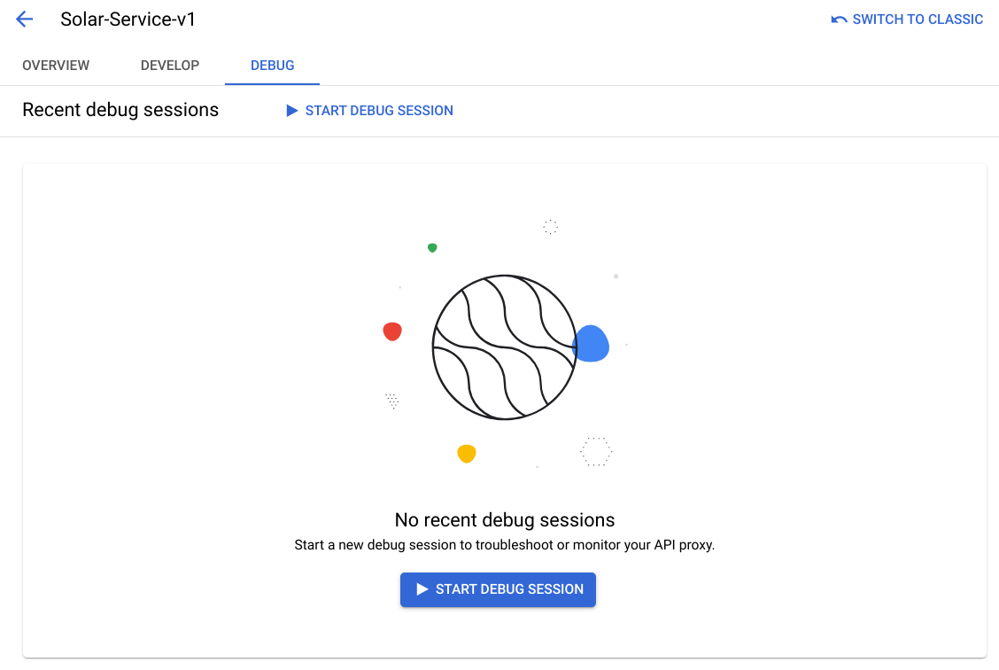
Click on the START DEBUG SESSION button to start debugging the live API traffic. Select your environment and current version and click START.
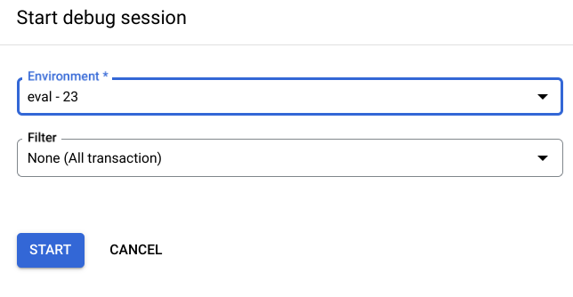
Now you should have a trace session running. Copy the URL property shown in the Debug Session to use later. This is the URL endpoint that our API is reachable at. Also save the URL for later for configuring the conversational agent.

Go back to the Cloud Shell environment and try to call the API.
First, set your copied URL as an environment variable.
URL=your copied URL from above
And then try to call the URL with any street address (below is the address of the Google office in Berlin, Germany, but you can try any address you like).
curl -X POST "$URL" -i \
-H "Content-Type: application/json" \
--data @- << EOF
{
"address": "Tucholskystr 2, 10117 Berlin"
}
EOF
You should get a HTTP/2 401 error response and a message that there was a failure to resolve the API key, which makes sense because we didn't send an API key, or any type of authorization.
If you check back in the Apigee debug screen, you should see the rejected API call displayed. You can step through the processing steps, and see where the API key validation failed.
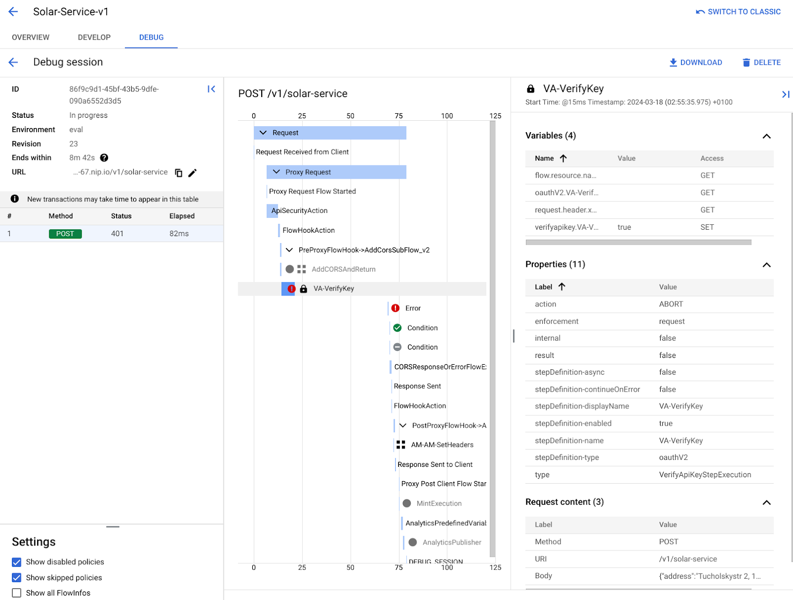
Let's now create an API Product and an App Subscription with Credentials to access this API. Normally the user would create this using a self-service portal (which we will also do later in this lab), but for the purposes of validating our API we will create it with apigeecli here first.
PRODUCT_NAME="Solar-API-v1"
apigeecli products create -n "$PRODUCT_NAME" \
-m "$PRODUCT_NAME" \
-o "$PROJECT" -e $APIGEE_ENVIRONMENT \
-f auto -p "Solar-Service-v1" -t $(gcloud auth print-access-token)
Now check in the Apigee console and you should see the new product Solar-API-v1. A product can link together many REST APIs, GraphQL endpoints and gRPC operations together in one object that developers can subscribe and get access to.
Open the product Solar API v1 and explore the configuration options, but there is no need to change anything right now.
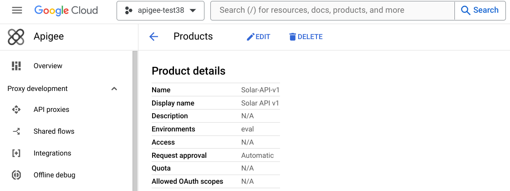
Now let's create a test developer and test credentials.
Set an environment variable with a sample email address for a developer.
DEVELOPER_EMAIL="example-developer@cymbalgroup.com"
Create the developer in Apigee using apigeecli.
apigeecli developers create -n "$DEVELOPER_EMAIL" \
-f "Example" -s "Developer" \
-u "$DEVELOPER_EMAIL" -o "$PROJECT" -t $(gcloud auth print-access-token)
Now let's create an app subscription using the test developer account.
APP_NAME=example-app-1
apigeecli apps create --name "$APP_NAME" \
--email "$DEVELOPER_EMAIL" \
--prods "$PRODUCT_NAME" \
--org "$PROJECT" --token $(gcloud auth print-access-token)
Set the environment variable API_KEY to the "consumerKey" field in the output, and save the API key value in your notes for a later step.
API_KEY="replace with consumerKey field from last command"
Then retry the call to our endpoint, this time with our API key in the header of the request.
curl -X POST "$URL" -i \
-H "Content-Type: application/json" \
-H "x-api-key: $API_KEY" \
--data @- << EOF
{
"address": "Tucholskystr 2, 10117 Berlin"
}
EOF
Now you should see a real response from our API.
{
"address": "Tucholskystr 2, 10117 Berlin",
"latitude": "52.5218289697085",
"longitude": "13.3917637197085",
"maxSunshineHoursPerYear": "1094.7657",
"maxArrayAreaMeters2": "1471.4832",
"maxArrayPanelsCount": "899",
"carbonOffsetFactorKgPerMwh": "474.99942",
"averageKwh": "48560.875",
"averagePanelsCount": "188",
"averageMarketValuePerYear": "8012.544375000001",
"averageCostToInstallPanels": "135360.0",
"averageBreakEvenPointInYears": "16.0"
}
Congratulations, you now have a fully functional solar power calculation API deployed in your Apigee environment!
Configure the Open API spec
We will now be using Vertex Agent Builder to use an LLM (gemini-pro in this case) to automatically connect and interact with our API. This will be done using the Open API spec that is in the repository.
But first we need to replace the server URL with our newly deployed proxy.
Click on the pencil icon in the Cloud Shell header to open the code editor.
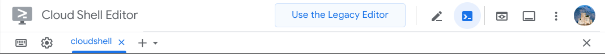
Then click on the hamburger three-lined menu in the upper left corner, go to the File > Open folder option, and then select the directory that you cloned (apigee-genai-solar-demo).

Now open the file api-specs/solar-api-v1.yaml in the editor, and replace the servers - url value with the base URL that you copied in the second above from the Trace window. Paste that value as the value in the yaml file as the url: - without the /solar-service path.

Take a look at the Open API specification, and how the operations are documented so that any developer, as well as Vertex AI conversation agents, can understand and utilize the API. Save the file, and keep it ready to use in a moment. This specification was also generated by Gemini for Apigee, so Gen AI is helping us at every step of the way.
Create a Vertex Agent app
Now open Vertex Agent Builder in a new browser window.
In case the service isn't enabled, click on CONTINUE to activate the API and continue to the app.
You should see a menu of different types of apps to create, click on the last option Agent.
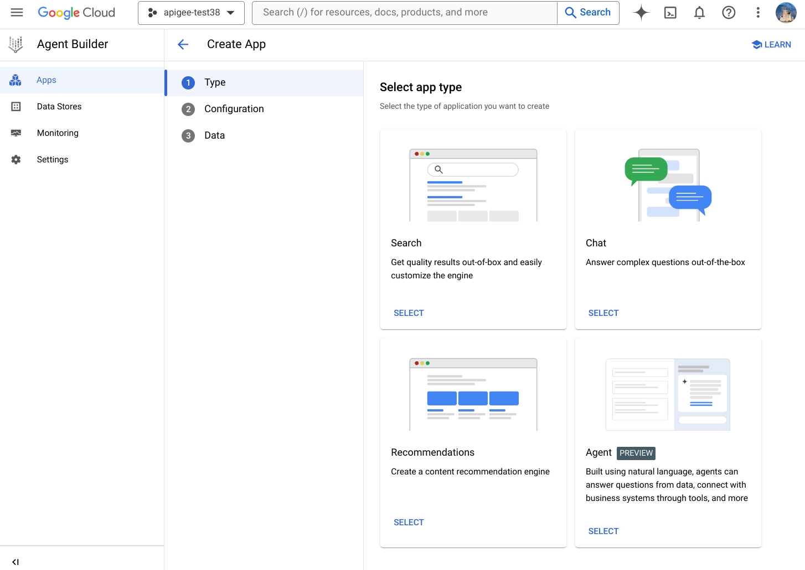
Give your app a name and click AGREE & CREATE.
After a bit your app will be created, then click on Tools in the left menu, and click on + Create to create a new tool. The tool will be the link to our API.
Give the tool the name Solar-Service, and paste the Open API spec from the previous section (where we replaced the server url) into the Schema box.
Select API Key as the Authentication type, and Request header as the API Key location. Paste the API key that we generated above when we tested the API into the API key secret box.
Then scroll to the top of the screen and press Save.
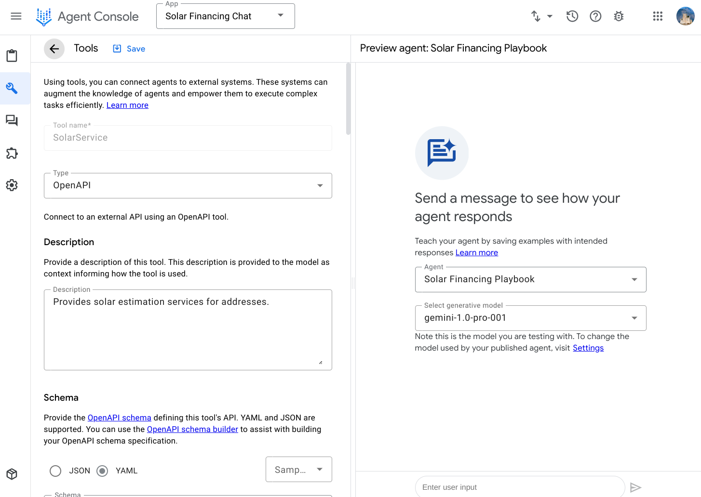
Now go back to the Agents section and click on the Default Generative Agent.
In the Goal field input a goal such as Provide solar estimation services for addresses.
Next to Instructions click on the Sample button and copy the Sample instructions, and then paste them in the Instructions text box.
Replace Example tool name with Solar-Service and remove the complete next entry with ${AGENT}. Your instruction box should look like this.
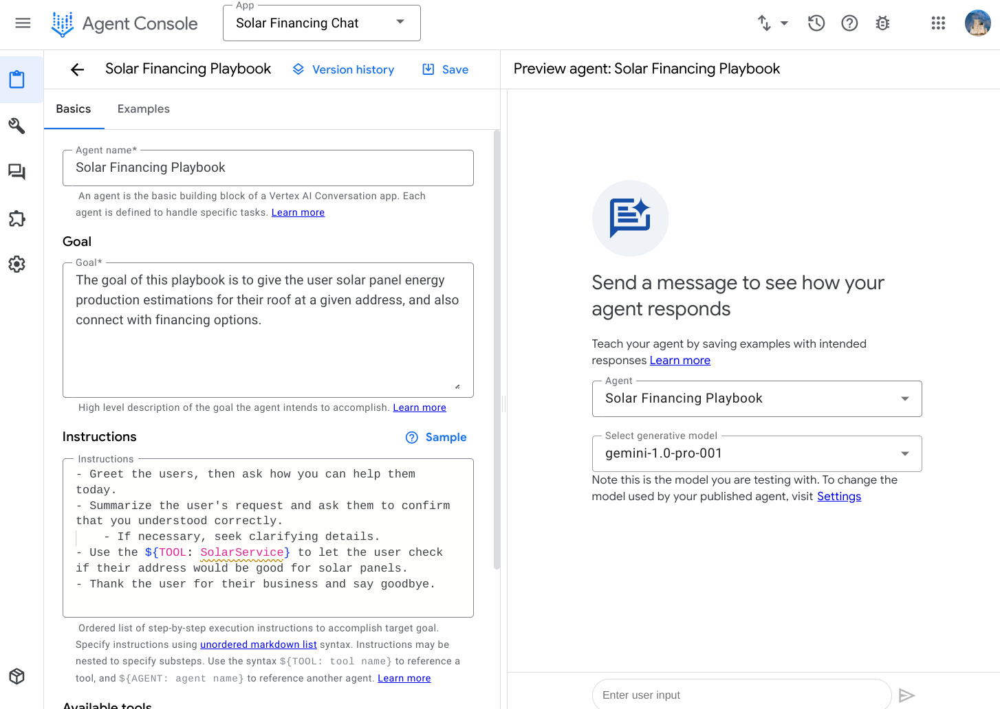
Now click Save to save the instructions.
Now type "hi" in the Send message box to the right, and ask the bot if any address would be good for solar panels. The bot will automatically use the configured API to answer questions about solar panel evaluations for roofs at addresses, and you can add many more tools and data stores to enrich the skills of the bot.

You can click on the Solar-Service bar in the conversation to open up the diagnostics information and see the exact request and response of the communication.
Try asking the question in different ways, with and without giving an address, and see how the agent adapts and makes sure to ask the right questions to get the needed inputs before calling the API. It's impressive what's possible now with the need for any coding of the integration!
Click on the Integrations menu item on the left side of the screen to see various channels where the bot can be added, as well as providing language services via API to other apps.
Test a Gen AI model API
Our API does more than just connect to the Solar API, it also offers a version of Gemini Pro as a solar Q&A service to users. Go back to the Open API spec in the Cloud Shell editor, and find the /v1/solar-service/questions endpoint.
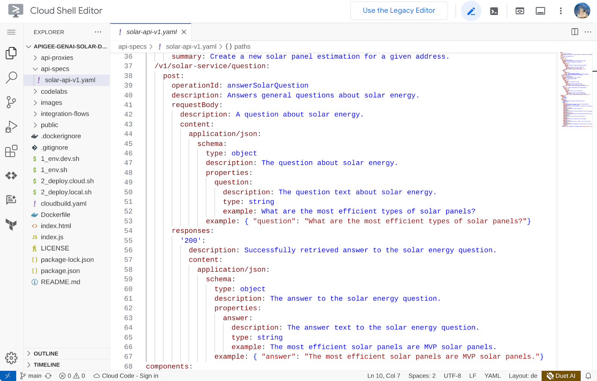
Now take a look in the Apigee console at the proxy definition for our SolarService-v1 API, and check out how we are using the Gemini API and prompting the model for requests through the /v1/solar-service/questions endpoint.
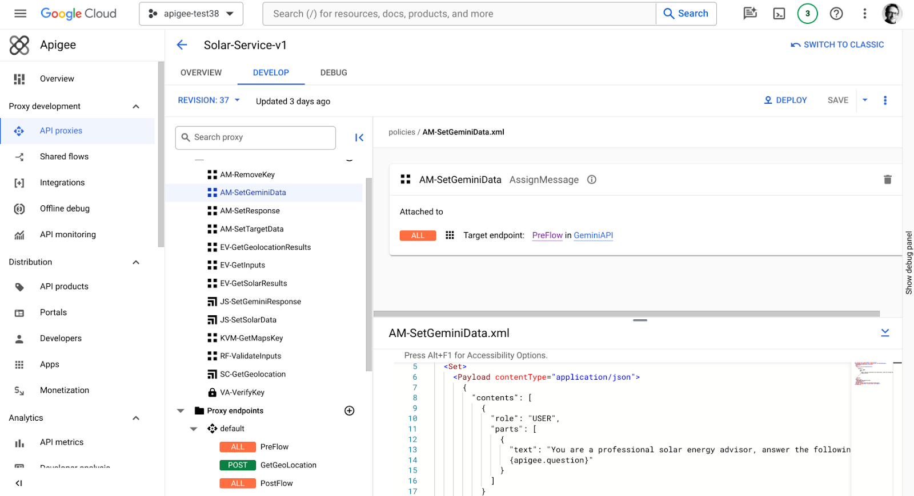
Let's test the questions endpoint now with some solar questions. We need to use the URL and API_KEY variables that we set previously when testing the solar calculation endpoint.
URL="$URL/questions"
curl -X POST "$URL" -i \
-H "Content-Type: application/json" \
-H "x-api-key: $API_KEY" \
--data @- << EOF
{
"question": "what are the most efficient types of solar panels?"
}
EOF
You should get a response from the model like this.
{
"answer" : "The most efficient types of solar panels are monocrystalline solar panels. They are made from a single crystal of silicon and have an efficiency of around 20-25%. Polycrystalline solar panels are made from multiple crystals of silicon and have an efficiency of around 15-20%. Thin-film solar panels are made from a thin layer of semiconductor material and have an efficiency of around 10-15%."
}
If you ask the model an unrelated question, such as "why is the sky blue," the model shouldn't answer that question because of our prompt tuning in the API.
Here we have an API endpoint in Apigee offering both backend service (Solar API) and Gen AI model (Gemini Pro) features to users with unified authentication & authorization, traffic management, and analytics. Take some time to explore further guides on adding more features to your APIs.
Deploy web test site
As a last step, let's deploy a test web site that uses our Vertex AI Conversations bot.
In the cloud shell editor, open the file in the cloned project folder public/index.html and find the snippet at the bottom with code containing <!-- BEGIN DIALOGFLOW SNIPPET –>. We're going to replace this with your own conversation bot code.
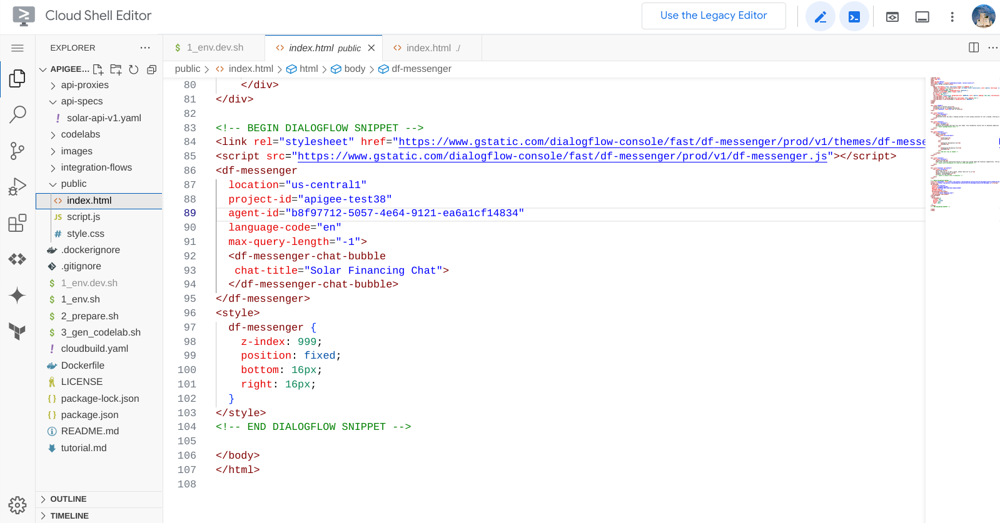
Now go back to the window with Vertex AI Agent Builder, or if it's now longer open, open it again here and go to the definition of your playbook app.
Go to Integrations, and select Dialogflow Messenger. Enable the integration and copy the code snippet that is displayed.
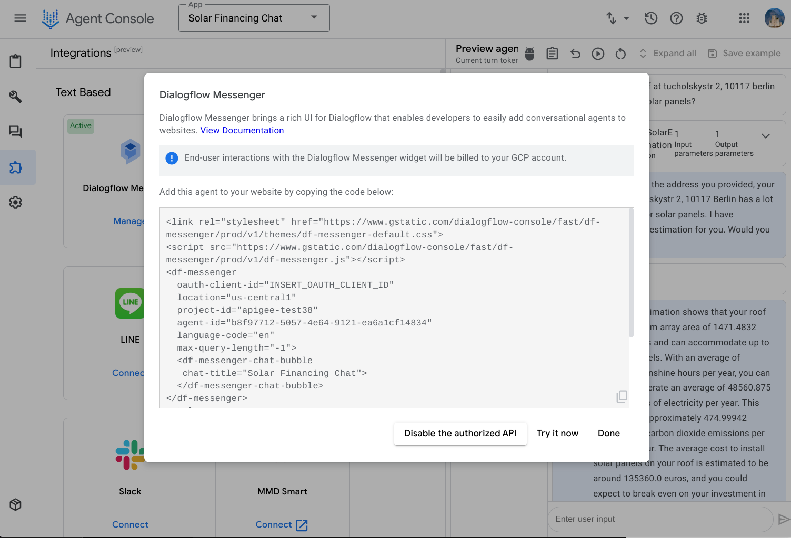
Replace the code snippet back in our index.html in the Cloud Shell editor with your own snippet, and save the file.
Now go to the Cloud Shell console at the bottom of the screen. Make sure that you are in the project directory with our source code, and type npm i && node index.js and press Enter. This will install and run a small web app that uses the Dialogflow messenger integration for testing.
Click on the button Web Preview at the top right of the screen to test your web app in your browser. Click on the button Preview on port 8080, and now test your Dialogflow app in a sample web page.
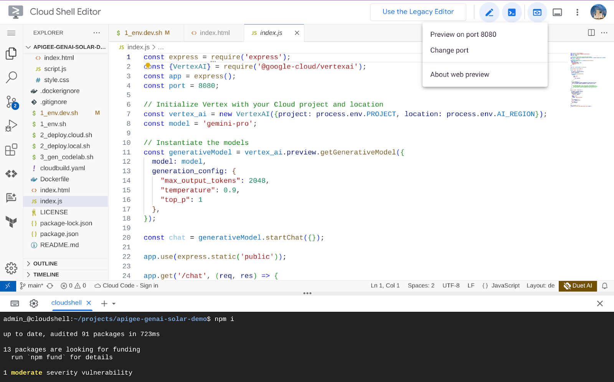
Try asking solar questions and about the potential for solar panels on different addresses, and observe how the app uses our API.
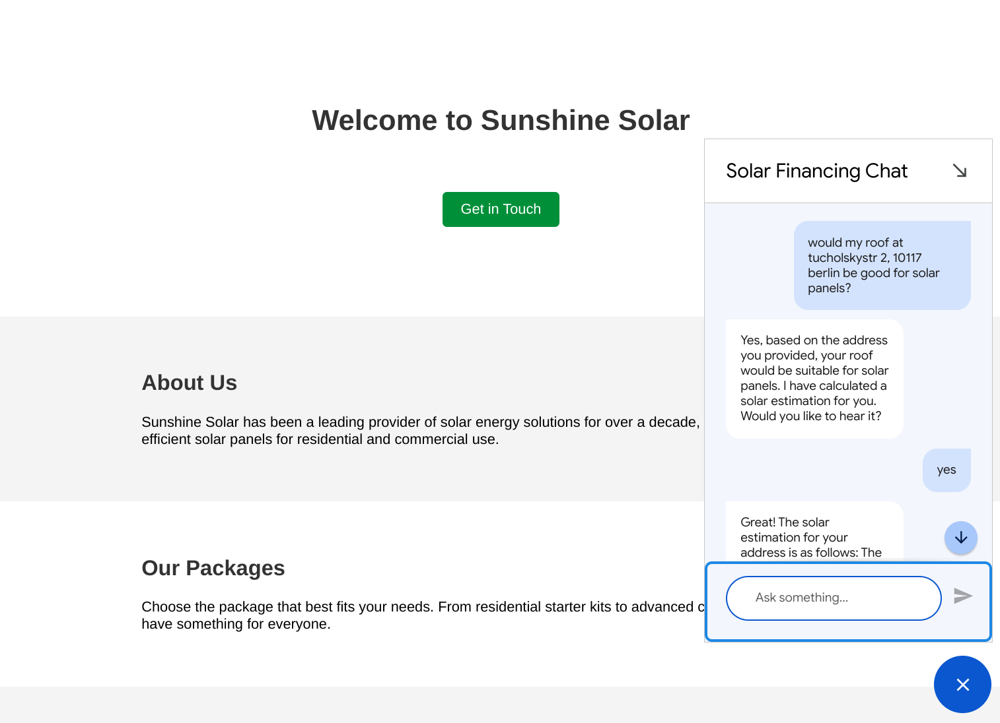
To review, we deployed Apigee APIs to the Google Maps Solar API, a Gemini Pro model, and the Vertex AI Conversations app that provided API & LLM-powered features to users.
Congratulations, you've successfully published your Solar API with backend and LLM integration on Apigee, and connected your first LLM app with Vertex AI Conversations. Check out these additional resources on adding more features to your API, and connect with the Apigee team in the Apigee Community below for more resources & use-cases.
What's next?
Check out some of these further resources